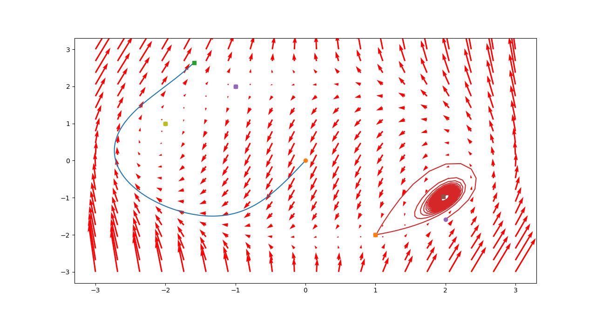

Лабораторна робота 3.
Детальніше...
|
| | x = np.linspace(-3.0, 3.0, 20) |
| | Задаємо діапазон x для побудови векторного поля та кількість векторів. Детальніше...
|
| |
| | y = np.linspace(-3.0, 3.0, 20) |
| | Задаємо діапазон y для побудови векторного поля та кількість векторів. Детальніше...
|
| |
| list | starts |
| | Задаємо декілька траєкторій. Детальніше...
|
| |
Лабораторна робота 3.

◆ calc()
| np.ndarray lab3.calc |
( |
|
X, |
|
|
int |
t = 0 |
|
) |
| |
Обчислює похідну системи по її значенням.
\[\left\{\begin{array}{l}x_1'(t)=x_1(t)^2-2x_1(t)x_2(t)+x2(t)^2-9\\ x_2'(t)=4x_1(t)^2+x_1x_2(t)+4x_2(t)^2-18 \end{array}\right.\]
- Аргументи
-
- Повертає
- вектор похідної
Див. визначення в файлі lab3.py, рядок 39
39 def calc(X, t: int = 0) -> np.ndarray:
42 x1**2-2*x1*x2+x2**2-9,
43 4*x1**2+x1*x2+4*x2**2-18,
np.ndarray calc(X, int t=0)
Обчислює похідну системи по її значенням.
◆ print_trajectories()
| None lab3.print_trajectories |
( |
list |
starts | ) |
|
Будуємо траекторії.
- Аргументи
-
| starts | змінна starts, яка задає усі траекторії |
Див. визначення в файлі lab3.py, рядок 62
66 tspan = np.linspace(0, t, 2000)
68 tr = odeint(calc, s, tspan)
70 plt.plot(tr[:,0], tr[:,1])
72 plt.plot([tr[0,0]], [tr[0,1]],
'o')
74 plt.plot([tr[-1,0]], [tr[-1,1]],
's')
None print_trajectories(list starts)
Будуємо траекторії.
None print_vector_field(np.ndarray x, np.ndarray y)
Обчислює векторне поле у діапазонах [-3, 3] по обом осям.
◆ print_vector_field()
| None lab3.print_vector_field |
( |
np.ndarray |
x, |
|
|
np.ndarray |
y |
|
) |
| |
Обчислює векторне поле у діапазонах [-3, 3] по обом осям.
- Аргументи
-
| x | массив усіх можливих значень x |
| y | массив усіх можливих значень y |
Див. визначення в файлі lab3.py, рядок 49
50 X, Y = np.meshgrid(x, y)
51 u, v = np.zeros(X.shape), np.zeros(Y.shape)
56 u[i, j], v[i, j] =
calc([X[i, j], Y[i, j]])
58 plt.quiver(X, Y, u, v, color=
'r')
◆ starts
Початкові значення
Задаємо декілька траєкторій.
Для кожної траекторії задаємо початкові значення та час для траєкторії.
Загалом у нас 5 траекторій:
- З початком у кординаті (0, 0) та часом 0.6
- З початком у кординаті (2, -1.585) та часом 100
- З початком у кординаті (-2.0, 1.0) та часом 100
- З початком у кординаті (1, -2) та часом 100
- З початком у кординаті (-1, 2) та часом 100
Див. визначення в файлі lab3.py, рядок 24
| lab3.x = np.linspace(-3.0, 3.0, 20) |
Задаємо діапазон x для побудови векторного поля та кількість векторів.
Див. визначення в файлі lab3.py, рядок 12
| lab3.y = np.linspace(-3.0, 3.0, 20) |
Задаємо діапазон y для побудови векторного поля та кількість векторів.
Див. визначення в файлі lab3.py, рядок 14